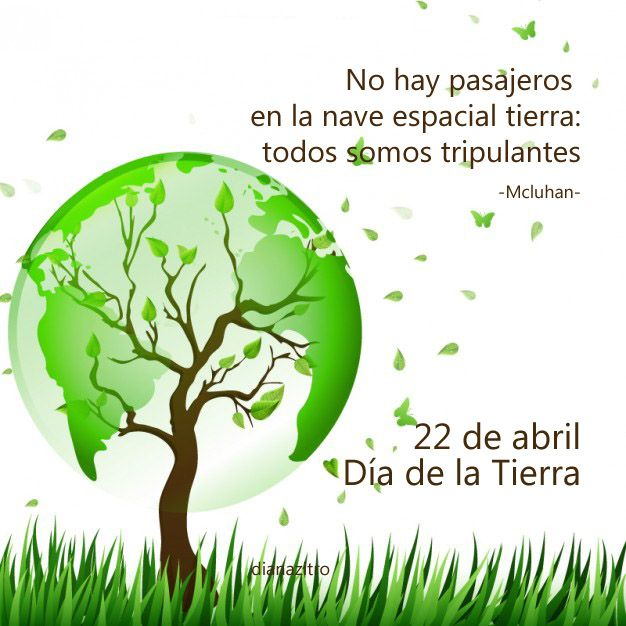

Día Internacional de la madre tierra; 22 de Abril
.png)
.jpg)
- 
Realizado por:
García Sánchez Bruno Moreau
4°E
Especialidad
Programación
Submódulo:
Desarrolla apliaciones Móviles
Docente
Lic. José Antonio Gómez Hernández
4°E
Programación
Desarrolla apliaciones Móviles
Lic. José Antonio Gómez Hernández
Celebramos el día internacional de la Madre Tierr para recordar que el planeta y sus ecosistemas nos dan vida y el sustento.Con este día, asumimos, además la responsabilidad colectiva, como nos recordaba la Declaración de río de 1992, de fomentar esta armonía con la naturaleza y la madre tierra. Ested día nos brinda tambipen la oportunidad de concienciar a todos los habitantes del planeta acerca de los problemas que afectan a la tierra y a las diferentes formas de vida que en él se desarrollan.
El Día de la Tierra tiene sus raíces en en 1960, la década del activismo combativo: “El medioambiente empezaba a sufrir y la gente estaba enfadada”. "En algunas ciudades del país, no era raro que pudieras caminar por el centro el plena hora punta y no poder ver nada debido a la contaminación”, dijo Kathleen Rogers, presidenta de la organización del Día de la Tierra en Washington y una de las primeras fundadoras en la organización del Día de la Tierra. A pesar del desencanto popular, las cuestiones ecológicas no estaban presentes en la agenda de los políticos de americanos, cuestión que irritaba al senador por Wisconsin, Gaylord Nelson, cuyas campañas en favor del medio ambiente durante la década de 1960 no surtieron efecto.
Aproximadamente 7.000 personas se reunieron en el Independence Mall en Filadelfia durante el primer Día de la Tierra, 22 de abril de 1970. En 1969, Nelson tuvo la idea de organizar una protesta en favor del medio ambiente tomando como modelo las manifestaciones en contra de la guerra de Vietnam. "Fue algo frenético. Nos llegaban telegramas, cartas y consultas telefónicas desde todas partes del país", escribiría Nelson en un ensayo poco antes de morir en julio de 2005 a los 89 años. "El pueblo estadounidense por fin tenía un foro para expresar su preocupación sobre lo que estaba sucediendo con la tierra, los ríos, los lagos y el aire, y lo hicieron de forma espectacular".
"Madre Tierra" es una expresión común utilizada para referirse al planeta Tierra en diversos países y regiones, lo que demuestra la interdependencia existente entre los seres humanos, las demás especies vivas y el planeta que todos habitamos. La Tierra y sus ecosistemas son nuestro hogar. Para alcanzar un justo equilibrio entre las necesidades económicas, sociales y ambientales de las generaciones presentes y futuras, es necesario promover la armonía con la naturaleza y el planeta.
Celebramos el Día Internacional de la Madre Tierra para recordar que el planeta y sus ecosistemas nos dan la vida y el sustento. Con este día, asumimos, además, la responsabilidad colectiva, como nos recordaba la Declaración de Río de 1992, de fomentar esta armonía con la naturaleza y la Madre Tierra. Este día nos brinda también la oportunidad de concienciar a todos los habitantes del planeta acerca de los problemas que afectan a la Tierra y a las diferentes formas de vida que en él se desarrollan
La Declaración sobre el medio ambiente y el desarrollo fue aprobada por la Asamblea General durante la Cumbre de Río da Janeiro en 1992. Esta Declaración se basa en la declaración anterior sobre el desarrollo sostenible celebrada en Estocolmo en 1972. La Declaración intenta impulsar una nueva forma de cooperación entre los Estados, los sectores y las personas.
En sus 27 Principios abarca tales cuestiones como la protección del medio ambiente; la relación entre el desarrollo económico, sostenible y ambiental; la cooperación entre los países para proteger, preservar y restablecer “la salud” y los recursos naturales de la tierra; la responsabilidad de los Estados a promulgar las leyes eficaces sobre el medio ambiente; la participación ciudadana en la protección del medio ambiente, entre otras.
El Manejo sostenible de tierra es un modelo de trabajo adaptable a las condiciones de un entorno específico, que permite el uso de los recursos disponibles para el desarrollo socio económico que garantice la satisfacción de las necesidades de la sociedad, el mantenimiento de las capacidades de los ecosistemas y su resiliencia.La gestión integrada de paisajes requiere comprender los diferentes impactos del uso de la tierra y equilibrar los intereses a menudo contradictorios de los diferentes grupos involucrados.
ONU Medio Ambiente promueve la gestión integrada y sostenible del paisaje a través de diferentes fondos internacionales como el Fondo para el Medio Ambiente Mundial, el Fondo Verde para el Clima o mediante fondos bilaterales como, por ejemplo, el de China.
.jpg)